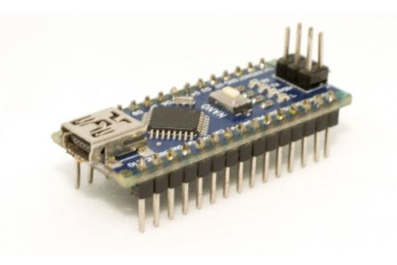

Getting acquinated with Arduino
Table of Contents
LECTURE 1
LECTURE 2
LECTURE 3
LECTURE 4
LECTURE 5
LECTURE 6A
LECTURE 6B
LECTURE 7
LECTURE 8
LECTURE 9
LECTURE 10
LECTURE 11
LECTURE 12
Getting acquinated with Arduino
Docs
»
Getting acquainted with Arduino!
View page source
Getting acquainted with Arduino!
¶
Arduino Tutorials
¶

Table of Contents
LECTURE 1
What is Arduino
Why Arduino??
Difference Between Microprocessor || Microcontroller
Various Arduino Boards
Pinout Diagram with Features
Some Example Projects
LECTURE 2
Arduino IDE
Download
Installation (Windows)
Installation (Linux)
Installation (Mac OS X)
User Interface
File Tab and Edit Tab
Sketch Tab and Tools Tab
Meaning of Symbols-Verify
Upload
New
Open
Save
Serial Monitor
Functions
LECTURE 3
DIGITAL OUTPUTS
VOLTAGE LEVELS
WHAT IS AN LED?
Resistor Selection
EXERCISE
HARDWARE
SOFTWARE
LECTURE 4
DIGITAL INPUTS
PULL UP Configuration
PULL DOWN Configuration
LECTURE 5
SEVEN SEGMENT DISPLAY(SSD)
LECTURE 6A
ANALOG INPUTS
What are Analog signals?
What are digital signals?
What is ADC?
Analog to Digital converter(ADC)
Light Dependent Resistor (LDR)
Variable Voltage Divider from LDR
LECTURE 6B
POTENTIOMETER
NTC Thermistors
NAVIGATION KEYS
EXERCISE:
HARDWARE
SOFTWARE
LECTURE 7
CHARLIEPLEXING
SCHEMATIC
Charlieplexing vs Multiplexing?
Exercise
HARDWARE
SOFTWARE
LECTURE 8
Pulse Width Modulation(PWM)
EXERCISE:
HARDWARE
SOFTWARE
LECTURE 9
INTERRUPTS
DELAYS AND MILLIS USAGE
USAGE
To show how interrupt works
LECTURE 10
Types of Buzzers
Exercise
LECTURE 11
KEYPAD
HIGH SIDE SWITCHING
LOW SIDE SWITCHING
KEYPAD CONNECTIONS
EXERCISE
HARDWARE
SOFTWARE
Practise Exercise
LECTURE 12
WHAT IS LCD?
EXERCISE
HARDWARE
SOFTWARE